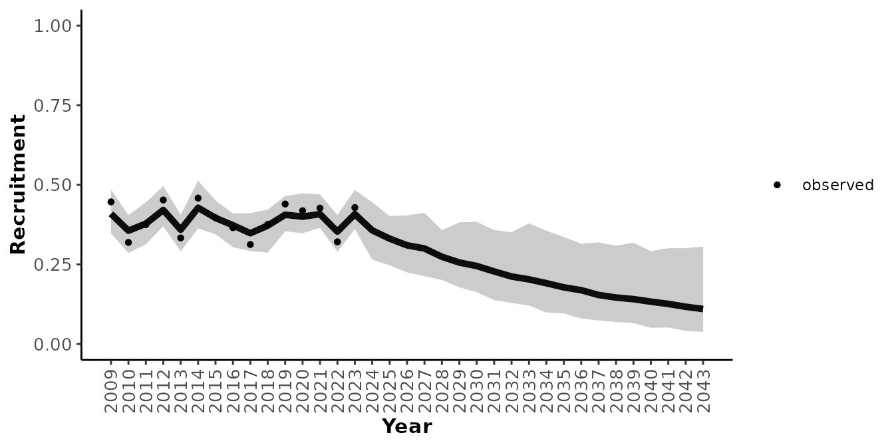
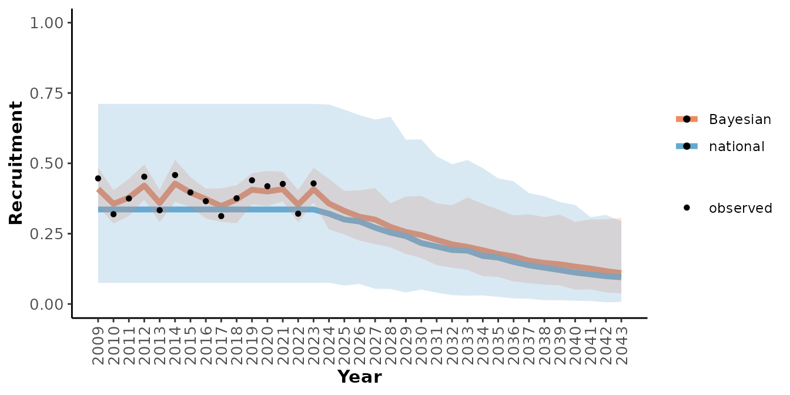
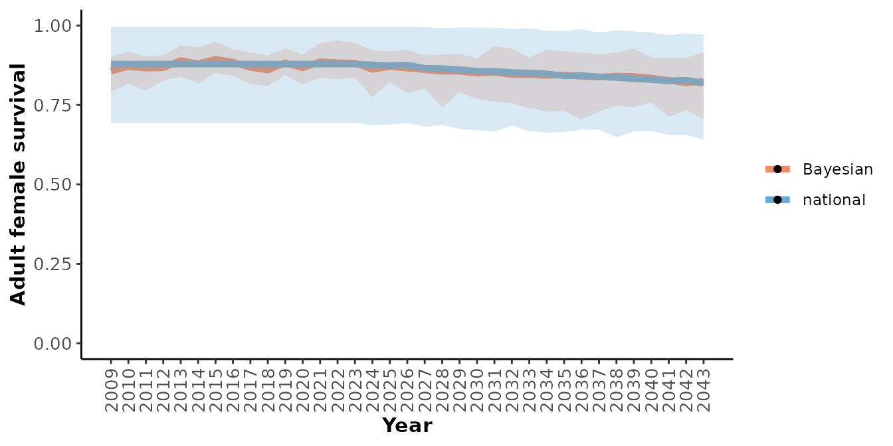
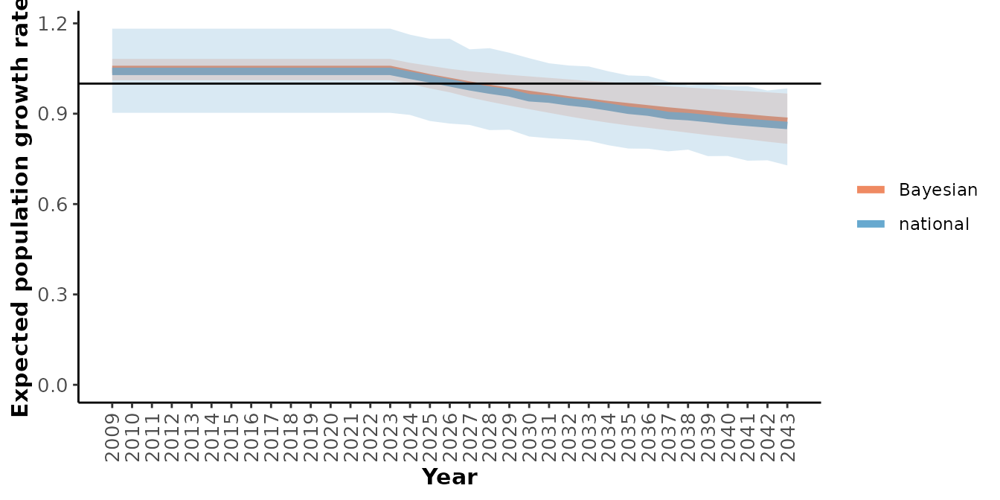
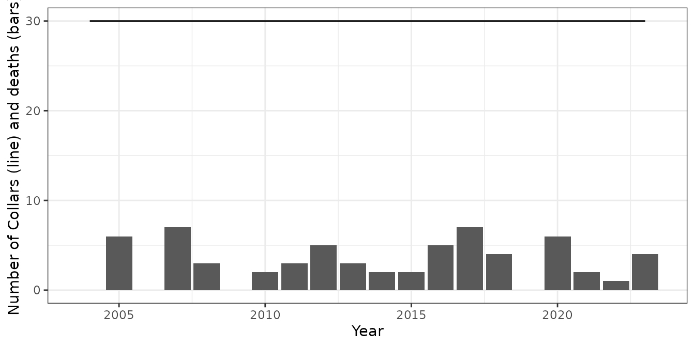
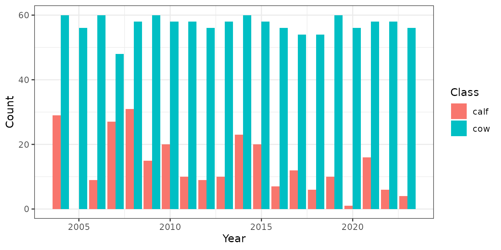
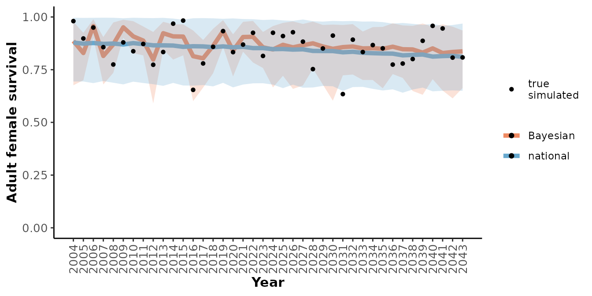

Bayesian Demographic Projection
Source:vignettes/BayesianDemographicProjection.Rmd
BayesianDemographicProjection.Rmd
library(caribouMetrics)
library(ggplot2)
library(dplyr)
#>
#> Attaching package: 'dplyr'
#> The following objects are masked from 'package:stats':
#>
#> filter, lag
#> The following objects are masked from 'package:base':
#>
#> intersect, setdiff, setequal, unioncaribouMetrics provides a simple Bayesian population model that integrates prior information from Johnson et al.’s (2020) national analysis of demographic-disturbance relationships with available local demographic data to project population growth. In addition, methods are provided for simulating local population dynamics and monitoring programs. These tools are also available through a shiny app described below.
Boreal caribou monitoring programs typically involve marking caribou with telemetry GPS/VHF collars which are used to monitor caribou over time and detect the death of marked animals. This data is then used to estimate survival, while recruitment is estimated by locating collared individuals using aircraft and then surveying the entire group of caribou to estimate the ratio of cows:calves in the group. Because this estimate is based on more than just the sample of collared cows, the sample size for recruitment estimates is typically larger than for survival.
Integration of local demographic data and national disturbance-demographic relationships in a Bayesian population model
Following Eacker et al. (2019), the observed number of calves \(\hat{J}_t\) is a binomially distributed function of the observed number of adult female caribou \(\hat{W}_t\) and the estimated recruitment rate \(R_t\): \[\hat{J}_t \sim \text{Binomial}(\hat{W}_t,R_t).\]
We model recruitment probability as a function of anthropogenic
disturbance and fire with a log link (Dyson et al., 2022; Johnson et
al., 2020; Stewart et al., 2023) and Gaussian distributed random year
effect (Eacker et al., 2019): \[\log(R_t)=\beta^R_0+\beta^R_a A_t+\beta^R_f
F_t+\epsilon^R_t; \epsilon^R_t
\sim \text{Normal}(0,\sigma^2_{R}).\] Estimated recruitment
probability is adjusted for sex ratio, misidentification biases, and age
of first reproduction (DeCesare et al., 2012; Eacker et al., 2019) to
get expected recruits per female: \[X_t=\frac{cR_t/2}{1+cR_t/2};
c=\frac{w(1+qu-u)}{(w+qu-u)(1-z)}.\] The composition survey bias
correction term \(c\) depends on the
apparent number of adult females per collared animal \(w\), the ratio of young bulls to adult
females \(q\), the probability of
misidentifying young bulls as adult females and vice versa \(u\), and the probability of missing a calf
\(z\) (see
compositionBiasCorrection()). To maintain consistency with
Johnson et al. (2020) we also provide an option
(adjustR = FALSE) to only adjust for sex ratio and
misidentification biases \(X_t=cR_t/2\).
In the Bayesian model, prior uncertainty about the value of the bias
correction term \(c\) is approximated
with a Log-normal distribution. Given the apparent number of adult
females per collared animal \(w\), the
mean and standard deviation of 10,000 samples of \(\log{c}\) is calculated with the default
being to assume the ratio of young bulls to adult females \(q\) varies uniformly between 0 and 0.6, the
adult misidentification probability \(u\) varies uniformly between 0 and 0.2, and
the probability of missing a calf \(z\)
varies uniformly between 0 and 0.2 (see getPriors()).
Also following Eacker et al. (2019), Kaplan-Meier estimates of
observed adult female survival probability \(\hat{S}_t\) and associated precisions \(\tau_t\) are estimated from known-fate
radio collar data using the survival package,
with precisions for years with no observed mortality estimated using a
separate Bayesian model. Observed estimated survival is a Gaussian
distributed function of the true survival probability: \[\hat{S_t} \sim
\text{Normal}(S_t,1/\tau_t).\] As in the national demographic
model, we model survival probability as an adjusted function of buffered
anthropogenic disturbance \(A_t\) with
a log link (Dyson et al., 2022; Johnson et al., 2020; Stewart et al.,
2023) and Gaussian distributed random year effect (Eacker et al., 2019):
\[S_t=\text{min}(46 \tilde{S_t}-0.5)/45,1);
\log(\tilde{S_t})=\beta^S_0+\beta^S_a A_t+\epsilon^S_t; \epsilon^S_t
\sim \text{Normal}(0,\sigma^2_{S}).\] To handle cases in which
there is little or no survival data, we also implemented an alternative
parametric exponential survival model, wherein the observed state (alive
or dead, \(\hat{I}_{i,t,m}\)) of an
individual animal \(i\) in year \(t\) and month \(m\) is Bernoulli distributed (Schaub and
Kery, 2021): \[\hat{I}_{i,t,m} \sim
\text{Bernoulli}(S^{1/12}_t\hat{I}_{i,t,m-1}).\] The exponential
survival method can be used in all cases instead of the Kaplan-Meier
method by setting survAnalysisMethod = "Exponential".
All regression coefficients are assumed to be Gaussian distributed,
with priors derived from the expected values and 95% confidence
intervals estimated by Johnson et al (2020)
(popGrowthTableJohnsonECCC). We calibrated the prior
distributions so that the 95% prior prediction intervals for survival
and recruitment from the Bayesian model match the range between the 2.5%
and 97.5% quantiles of 1000 simulated survival and recruitment
trajectories (see getPriors()).
Using real observed data
caribouMetrics includes example csv files of collar survival and calf cow count data as well as disturbance data that can be used as templates for the format for observed data.
survObs <- read.csv(system.file("extdata/simSurvData.csv", package = "caribouMetrics"))
ageRatioObs <- read.csv(system.file("extdata/simAgeRatio.csv", package = "caribouMetrics"))
distObs <- read.csv(system.file("extdata/simDisturbance.csv", package = "caribouMetrics"))
survObs %>% group_by(Year) %>%
summarise(n_collars = n(),
n_die = sum(event)) %>%
ggplot(aes(Year))+
geom_line(aes(y = n_collars))+
geom_col(aes(y = n_die))+
labs(y = "Number of Collars (line) and deaths (bars)") Plotting the data shows that the collaring program included 60
individuals with collars being replenished every 3 years over a
monitoring period of 15 years. Calf cow surveys typically counted ~150
cows and ~50 calves. There is no disturbance in the years of the
observation data but disturbance is expected to increase quickly in the
future.
Plotting the data shows that the collaring program included 60
individuals with collars being replenished every 3 years over a
monitoring period of 15 years. Calf cow surveys typically counted ~150
cows and ~50 calves. There is no disturbance in the years of the
observation data but disturbance is expected to increase quickly in the
future.
These data sets can be supplied to
caribouBayesianIPM()to project the impact on the caribou
population as disturbance increases over the next 20 years.
mod_real <- caribouBayesianIPM(survData = survObs, ageRatio = ageRatioObs,
disturbance = distObs,
# only set to speed up vignette. Normally keep defaults.
Niter = 150, Nburn = 100)
#> using Kaplan-Meier survival model
str(mod_real, max.level = 2)
#> List of 2
#> $ result:List of 6
#> ..$ model :List of 8
#> .. ..- attr(*, "class")= chr "jags"
#> ..$ BUGSoutput :List of 24
#> .. ..- attr(*, "class")= chr "bugs"
#> ..$ parameters.to.save: chr [1:12] "S.annual.KM" "R" "Rfemale" "pop.growth" ...
#> ..$ model.file : chr "/tmp/Rtmp36k7yU/JAGS_run.txt"
#> ..$ n.iter : num 150
#> ..$ DIC : logi TRUE
#> ..- attr(*, "class")= chr "rjags"
#> $ inData:List of 3
#> ..$ survDataIn :'data.frame': 35 obs. of 10 variables:
#> ..$ disturbanceIn:'data.frame': 35 obs. of 6 variables:
#> ..$ ageRatioIn :'data.frame': 70 obs. of 4 variables:The returned object contains an rjags object and a list
with the modified input data. We can get tables summarizing the results
using getOutputTables().
mod_tbl <- getOutputTables(mod_real)
str(mod_tbl)
#> List of 4
#> $ rr.summary.all:'data.frame': 175 obs. of 13 variables:
#> ..$ Year : int [1:175] 2009 2009 2009 2009 2009 2010 2010 2010 2010 2010 ...
#> ..$ Parameter : chr [1:175] "Adjusted recruitment" "Adult female survival" "Recruitment" "Female population size" ...
#> ..$ Mean : num [1:175] 0.222 0.892 0.422 1000 1.089 ...
#> ..$ SD : num [1:175] 0.023 0.018 0.029 0 0.04 ...
#> ..$ Lower 95% CRI : num [1:175] 0.182 0.858 0.372 1000 1.024 ...
#> ..$ Upper 95% CRI : num [1:175] 0.268 0.926 0.478 1000 1.166 ...
#> ..$ probViable : num [1:175] NA NA NA NA 1 NA NA NA NA 0.98 ...
#> ..$ X : int [1:175] 1 1 1 1 1 2 2 2 2 2 ...
#> ..$ Anthro : int [1:175] 0 0 0 0 0 0 0 0 0 0 ...
#> ..$ fire_excl_anthro: num [1:175] 0 0 0 0 0 0 0 0 0 0 ...
#> ..$ Total_dist : num [1:175] 0 0 0 0 0 0 0 0 0 0 ...
#> ..$ time : int [1:175] 1 1 1 1 1 2 2 2 2 2 ...
#> ..$ param : chr [1:175] "observed" "observed" "observed" "observed" ...
#> $ sim.all : NULL
#> $ obs.all :'data.frame': 70 obs. of 10 variables:
#> ..$ Year : num [1:70] 2009 2009 2010 2010 2011 ...
#> ..$ Mean : num [1:70] 0.446 0.817 0.857 0.319 0.833 ...
#> ..$ parameter : chr [1:70] "Recruitment" "Adult female survival" "Adult female survival" "Recruitment" ...
#> ..$ type : chr [1:70] "observed" "observed" "observed" "observed" ...
#> ..$ X : int [1:70] 1 1 2 2 3 3 4 4 5 5 ...
#> ..$ Anthro : int [1:70] 0 0 0 0 0 0 0 0 0 0 ...
#> ..$ fire_excl_anthro: num [1:70] 0 0 0 0 0 ...
#> ..$ Total_dist : num [1:70] 0 0 0 0 0 ...
#> ..$ time : int [1:70] 1 1 2 2 3 3 4 4 5 5 ...
#> ..$ param : chr [1:70] "observed" "observed" "observed" "observed" ...
#> $ ksDists :'data.frame': 175 obs. of 4 variables:
#> ..$ Year : int [1:175] 2009 2009 2009 2009 2009 2010 2010 2010 2010 2010 ...
#> ..$ Parameter : chr [1:175] "Adjusted recruitment" "Adult female survival" "Recruitment" "Female population size" ...
#> ..$ KSDistance: logi [1:175] NA NA NA NA NA NA ...
#> ..$ KSpvalue : logi [1:175] NA NA NA NA NA NA ...And plot the results with plotRes().
plotRes(mod_tbl, "Recruitment", labFontSize = 10)
We can also compare our local observed data to what would be projected by the national model with out considering local population specific data.
simNational <- getSimsNational()
#> Warning: Setting expected survival S_bar to be between l_S and h_S.
#> Updating cached national simulations.
mod_nat_tbl <- getOutputTables(mod_real,
simNational = simNational,
getKSDists = FALSE)
plotRes(mod_nat_tbl,
c("Recruitment", "Adult female survival", "Population growth rate"),
labFontSize = 10)
#> $Recruitment
#>
#> $`Adult female survival`
#>
#> $`Population growth rate`
From these graphs we can see that this local population seems to have slightly higher demographic rates than would have been predicted by the national model alone and that the uncertainty around the predictions is lower when the local observations are included. Note that the population’s response to anthropogenic disturbance is completely determined by the national model since there was 0% disturbance during the observation period.
Simulation of local population dynamics and monitoring
To simulate plausible demographic trajectories for example populations we used a modified version of Johnson et al’s (2020) two-stage demographic model described by Dyson et al. (2022). The true number of post-juvenile females that survive from year \(t\) to the census, \(\dot{W}_t\), is binomially distributed with true survival probability \(\dot{S}_t\): \(\dot{W}_{t} \sim \text{Binomial}(\dot{N}_t,\dot{S}_t)\). Maximum potential recruitment rate is adjusted for sex ratio, misidentification biases and (optionally) delayed age at first reproduction (DeCesare et al., 2012; Eacker et al., 2019): \[\dot{X}_t=\frac{c\dot{R}_t/2}{1+c\dot{R}_t/2};c=\frac{w(1+qu-u)}{(w+qu-u)(1-z)}, \] where \(w\) is a multiplier that defines the apparent number of adult females in the composition survey as a function of the number of collared animals, \(q\) is the ratio of young bulls to adult females, \(u\) is the probability of misidentifying young bulls as adult females and vice versa, and \(z\) is the probability of missing a calf.
Realized recruitment rate varies with population density (Lacy et al., 2017), and the number of juveniles recruiting to the post-juvenile class at the census is a binomially distributed function of the number of surviving post-juvenile females and the adjusted recruitment rate: \[\dot{J}_{t} \sim \text{Binomial}(\dot{W}_t,\dot{X}_t[p_0-(p_0-p_k)(\frac{\dot{W}_t}{N_0k})^b]\frac{\dot{W}_t}{\dot{W}_t+a}).\] Given default parameters, recruitment rate is lowest \((0.5\dot{X}_t)\) when \(\dot{N}_t=1\), approaches a maximum of \(\dot{X}_t\) at intermediate population sizes, and declines to \(0.6\dot{X}_t\) as the population reaches carrying capacity of \(k=100\) times the initial population size. The post-juvenile female population in the next year includes both survivors and new recruits: \(\dot{N}_{t+1}=\text{min}(\dot{W}_t+\dot{J}_t,r_{max}\dot{N}_t)\).
Interannual variation in survival and recruitment is modelled using
truncated beta distributions (rtrunc function; Novomestky and Nadarajah
(2016)): \(\dot{R}_t \sim
\text{TruncatedBeta}(\bar{R}_t,\nu_R,l_R,h_R); \dot{S}_t \sim
\text{TruncatedBeta}(\bar{S}_t,\nu_S,l_S,h_S)\). Coefficients of
variation among years \((\nu_R,\nu_S)\)
and maximum/minimum values \(l_R,h_R,l_S,h_S\) for recruitment and
survival have default values set in caribouPopGrowth().
Expected recruitment (\(\bar{R}_t\))
and survival (\(\bar{S}_t\)) vary with
disturbance according the beta regression models estimated by Johnson et
al. (2020: \[ \bar{R}_t \sim
Beta(\mu^R_t,\phi^R);log(\mu^R_t)=\dot{\beta^R_0}+\dot{\beta^R_a}A_t+\dot{\beta}^R_fF_t,\]
\[\bar{S}_t \sim (46\times
Beta(\mu^S_t,\phi^S)-0.5)/45;log(\mu^S_t)=\dot{\beta^S_0}+\dot{\beta^S_a}A_t.\]
\(\phi^R \sim
\text{Normal}(19.862,2.229)\) and \(\phi^S \sim \text{Normal}(63.733,8.311)\)
are precisions of the Beta distributed errors (Ferrari and Cribari-Neto,
2004). At the beginning of a simulation for an example population,
regression coefficient values are sampled from Gaussian distributions
(see demographicRates()) and the population is assigned to
quantiles of the Beta error distributions for survival and recruitment.
The population remains in these quantiles as disturbance changes over
time, so there is substantial persistent variation in recruitment and
survival among example populations.
Observed survival of collared animals
In our simulated populations, mortality risk does not vary over time or among individuals, so the observed state (dead or alive) of a collared animal \(i\) in month \(m\) and year \(t\) depends on the true survival rate \(\dot{S}_t\) as follows: \[\hat{I}_{i,t,m} \sim \text{Bernoulli}(\dot{S}^{1/12}_t\hat{I}_{i,t,m-1}).\]
Observed recruitment from composition surveys
The number of cows in the composition survey \(\hat{W}_t\) is given by the number of collared cows \(\hat{T}_t\) and the apparent number of adult females per collared female observed in the composition survey \(w\): \[\hat{W}_t = w\hat{T}_t.\] The number of observed calves \(\hat{J}_t\) also depends on the unadjusted apparent recruitment for the population \(\dot{R}_t\): \[\hat{J}_t \sim \text{Binomial}(\hat{W}_t,\dot{R}_t).\]
Using simulated observed data
To run the simulations we need to supply parameters that determine
the disturbance scenario, the trajectory of the true population relative
to the national model mean, and the collaring program details. All these
parameters are set with getScenarioDefaults() which will
create a table with the default values of all parameters and override
the defaults for any values that are supplied. Below we define a
scenario where we have 20 years of observations and 20 years of
projection, increasing anthropogenic disturbance over time, and 30
collars deployed every year. We assume that 2 cows will be observed in
aerial surveys for every collared cow. The default values are set for
our simulated true population meaning that we assume the population has
the same response to disturbance as the national model and that the
population demographic rates are close to the national average. See
getScenarioDefaults() for a detailed description of each
parameter.
scn_params <- getScenarioDefaults(
# Anthropogenic disturbance increases by 2% per year in observation period and
# 3% per year in projection period
obsAnthroSlope = 2, projAnthroSlope = 3,
# 20 years each of observations and projections
obsYears = 20, projYears = 20,
# Collaring program aims to keep 30 collars active
collarCount = 30,
# Collars are topped up every year
collarInterval = 1,
# Assume will see 2 cows in aerial survey for every collar deployed
cowMult = 2
)
scn_params
#> iFire iAnthro obsAnthroSlope projAnthroSlope rSlopeMod sSlopeMod rQuantile
#> 1 0 0 2 3 1 1 0.5
#> sQuantile projYears obsYears preYears N0 adjustR assessmentYrs qMin qMax
#> 1 0.5 20 20 0 1000 TRUE 3 0 0.6
#> uMin uMax zMin zMax cowMult collarInterval collarCount curYear ID
#> 1 0 0.2 0 0.2 2 1 30 2023 1
#> label
#> 1 ID1_curYear2023_collarCount30_collarInterval1_cowMult2_zMax0.2_zMin0_uMax0.2_uMin0_qMax0.6_qMin0_assessmentYrs3_adjustRTRUE_N01000_preYears0_obsYears20_projYears20_sQuantile0.5_rQuantile0.5_sSlopeMod1_rSlopeMod1_projAnthroSlope3_obsAnthroSlope2_iAnthro0_iFire0_
#> startYear
#> 1 2004
sim_obs <- simulateObservations(
scn_params,
# collars fall off after 4 years and are deployed in May and fall off in August
collarNumYears = 4, collarOffTime = 8, collarOnTime = 5,
printPlot = TRUE)
sim_obs$simSurvObs %>% group_by(Year) %>%
summarise(ncollar = n(), ndeaths = sum(event),
ndropped = sum(exit == 5 & event == 0),
nadded = sum(enter == 7),
survsCalving = sum(exit >= 6)) %>%
ggplot(aes(Year))+
geom_line(aes(y = ncollar))+
geom_col(aes(y = ndeaths))+
labs(y = "Number of Collars (line) and deaths (bars)")


We can provide the simulated observations to
caribouBayesianIPM() to project the population growth over
time. This time we supply the expected true population metrics as well
as the model results to getOutputTables() so that we can
see how well our monitoring program captured the true population.
mod_sim <- caribouBayesianIPM(survData = sim_obs$simSurvObs,
ageRatio = sim_obs$ageRatioOut,
disturbance = sim_obs$simDisturbance,
# only set to speed up vignette. Normally keep defaults.
Niter = 150, Nburn = 100)
#> using Kaplan-Meier survival model
mod_sim_tbl <- getOutputTables(mod_sim, exData = sim_obs$exData,
paramTable = sim_obs$paramTable,
simNational = simNational,
getKSDists = FALSE)
plotRes(mod_sim_tbl,
c("Recruitment", "Adult female survival", "Population growth rate"),
labFontSize = 10)
#> $Recruitment
#>
#> $`Adult female survival`
#>
#> $`Population growth rate`
Comparing many scenarios
eParsIn <- list()
eParsIn$collarOnTime <- 1
eParsIn$collarOffTime <- 12
eParsIn$collarNumYears <- 3
# adjust recruitment for delayed age of first reproduction
adjustR <- T
simBig <- getSimsNational(adjustR = adjustR)
#> Using saved object
scns <- expand.grid(
obsYears = 10, projYears = 10, collarCount = 100, cowMult = 2, collarInterval = 2,
assessmentYrs = 1, iAnthro = 0, obsAnthroSlope = 0, projAnthroSlope = 0,
sQuantile = c(0.1, 0.5, 0.9), rQuantile = c(0.1, 0.5, 0.9), N0 = 1000
)
scResults <- runScnSet(
scns, eParsIn, simBig, getKSDists = FALSE,
# only set to speed up vignette. Normally keep defaults.
Niter = 150, Nburn = 100)
#> using Kaplan-Meier survival model
#> using Kaplan-Meier survival model
#> Warning in caribouBayesianIPM(survData = oo$simSurvObs, ageRatio =
#> oo$ageRatioOut, : warning, low sample size of adult females in at least one
#> year
#> using Kaplan-Meier survival model
#> using Kaplan-Meier survival model
#> Warning in caribouBayesianIPM(survData = oo$simSurvObs, ageRatio =
#> oo$ageRatioOut, : warning, low sample size of adult females in at least one
#> year
#> using Kaplan-Meier survival model
#> Warning in caribouBayesianIPM(survData = oo$simSurvObs, ageRatio =
#> oo$ageRatioOut, : warning, low sample size of adult females in at least one
#> year
#> using Kaplan-Meier survival model
#> using Kaplan-Meier survival model
#> Warning in caribouBayesianIPM(survData = oo$simSurvObs, ageRatio =
#> oo$ageRatioOut, : warning, low sample size of adult females in at least one
#> year
#> using Kaplan-Meier survival model
#> Warning in caribouBayesianIPM(survData = oo$simSurvObs, ageRatio =
#> oo$ageRatioOut, : warning, low sample size of adult females in at least one
#> year
#> using Kaplan-Meier survival model
plotRes(scResults,
c("Recruitment", "Adult female survival", "Population growth rate"),
facetVars = c("rQuantile", "sQuantile"))
#> $Recruitment
#>
#> $`Adult female survival`
#>
#> $`Population growth rate`
Modifying Bayesian model priors
By default caribouBayesianIPM() calls
getPriors() internally to set the priors for the Bayesian
model based on the national model and default uncertainty modifiers that
have been calibrated to fit the national model while allowing for
deviations based on local data. The parameters to
getPriors() affect the level of uncertainty around the
coefficients from the national model. If uncertainty in the national
model is higher then the projections can deviate more from the national
model if the observed data does. See getPriors() for
details.
Troubleshooting
The national model results are cached if the default values are used.
This cache can be updated by running
getSimsNational(forceUpdate = TRUE)
Use the Bayesian demographic projection app
In addition to performing Bayesian demographic projections in R you can also use our shiny app to run similar analyses from a Graphical User Interface. To launch the app you will first need to install the package from GitHub.
#install.packages("remotes")
remotes::install_github("LandSciTech/BayesianCaribouDemographicProjection")Then you can call demographicProjectionApp() to launch
the app in your default browser. The app includes options to modify the
disturbance scenario, the simulated observations and the model priors
similar to those described above. Detailed instructions are included on
the first page.